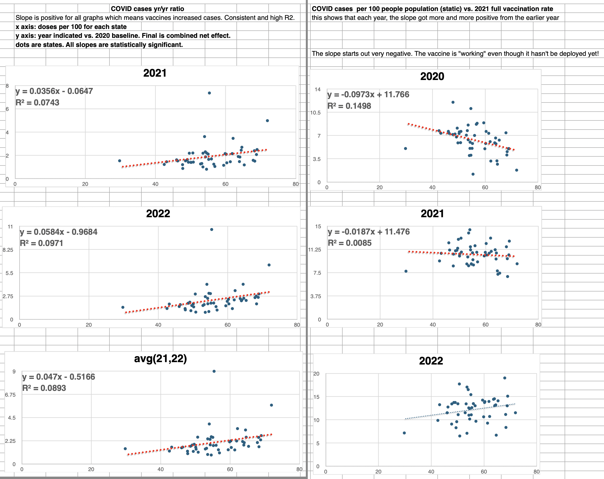
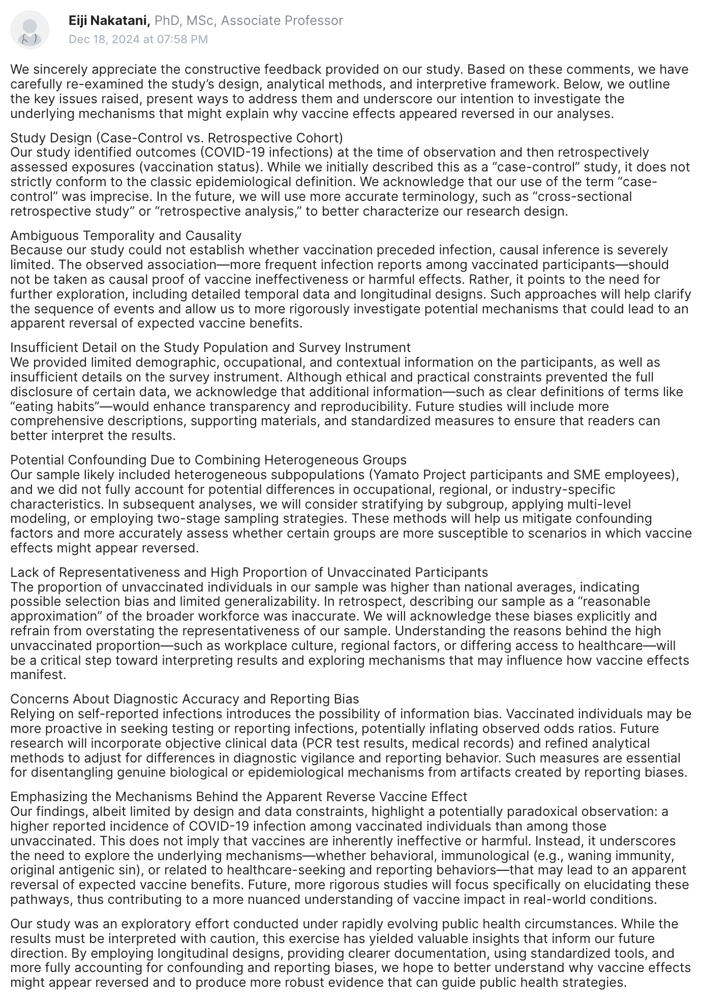
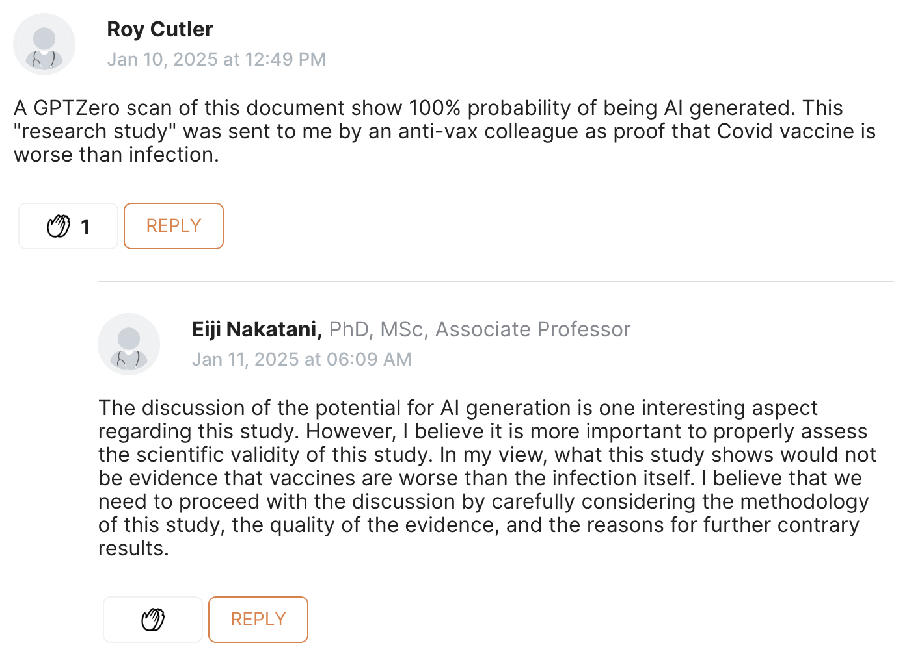
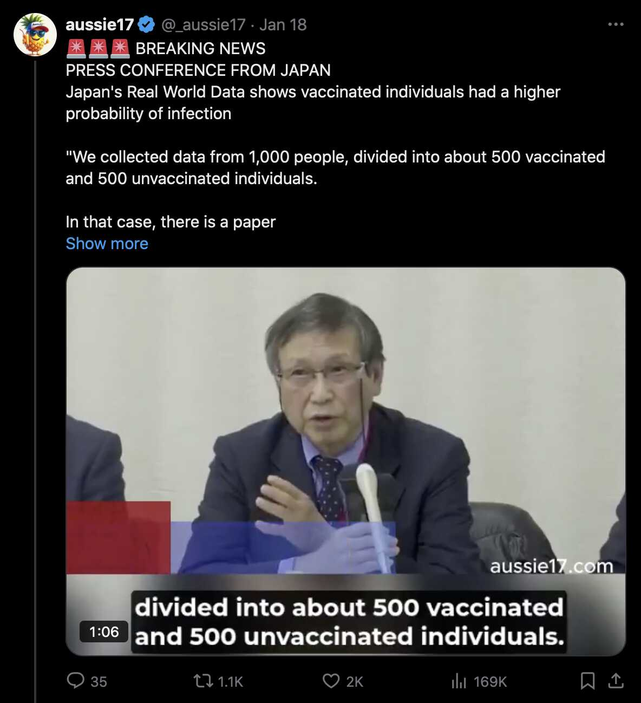
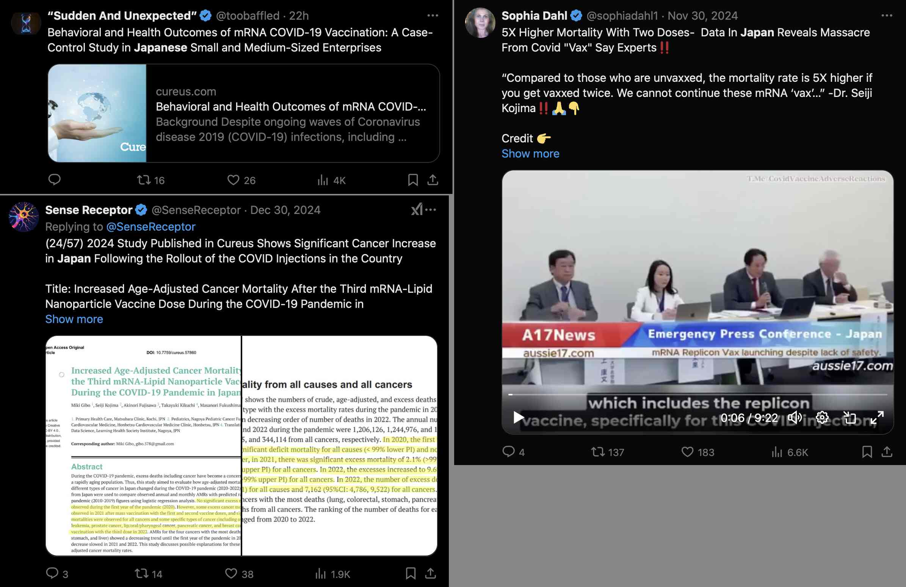
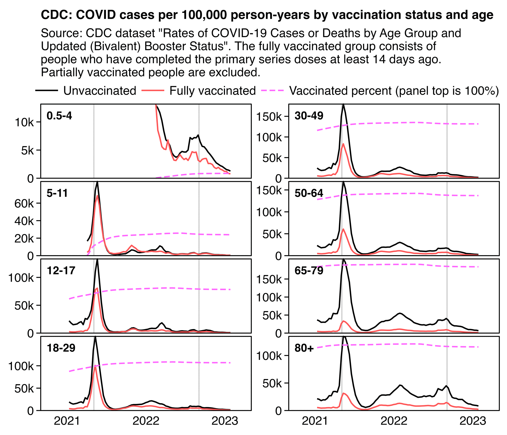
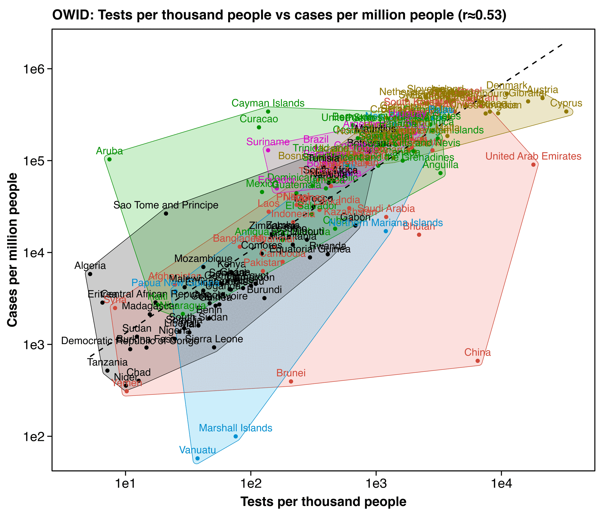
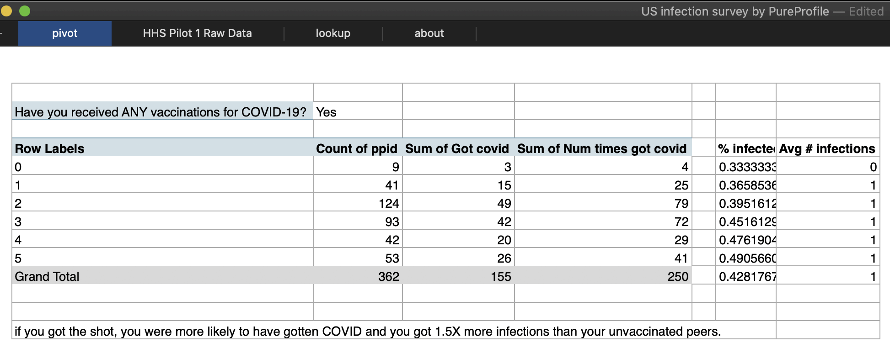
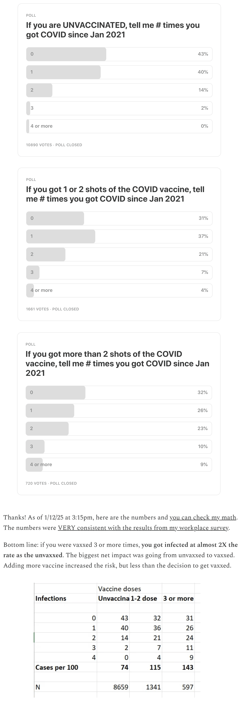
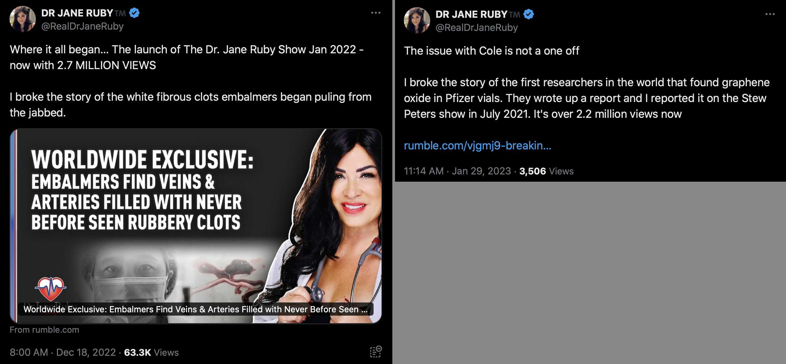

Part 1 is here: rootclaim.html.
This section addresses Kirsch's third round of arguments to Saar Wilf: https://kirschsubstack.com/p/the-latest-round-in-the-2m-debate.
Kirsch wrote: "CDC state and county case data: x-axis=vax rate. y-axis=relative # of cases to baseline. Regression shows >1.5X higher cases in 2021, and >2X higher cases in 2022. 95% confidence slope increased in both years over baseline in BOTH all state and all county data. This is dispositive as there is nothing that is more fundamental than this data to resolve the question of cases. More vaccines→ more cases in both years."
He linked to a spreadsheet with these plots (where for some reason on the left he claimed that he got high r2 values even though the values were below 0.1):

At first I thought the plots on the left showed the difference in raw number of cases and not cases in capita, which would have been confounded by population size. However actually the plots on the left do correctly show the difference in cases per capita.
However one bias in Kirsch's analysis is that states with a higher percentage of vaccinated people also tend to have more tests performed per capita. But in states with a low percentage of vaccinated people, there tends to also be a lower number of tests performed per capita which probably makes it less likely that COVID infections are detected as cases:
download.file("https://healthdata.gov/api/views/j8mb-icvb/rows.csv","statespcr.csv")
download.file("https://data.cdc.gov/api/views/rh2h-3yt2/rows.csv","statesvax.csv")
download.file("https://www2.census.gov/programs-surveys/popest/datasets/2020-2023/state/totals/NST-EST2023-ALLDATA.csv","NST-EST2023-ALLDATA.csv")
test=fread("statespcr.csv")
test[,year:=year(as.Date(date,"%Y/%m/%d"))]
test=test[,.(tests=sum(new_results_reported),positive=sum(new_results_reported[overall_outcome=="Positive"])),.(state=state_name,code=state,year)]
pop=fread("NST-EST2023-ALLDATA.csv")
a=merge(test[year==2021],pop[,.(state=NAME,pop=POPESTIMATE2021)])
vax=fread("statesvax.csv")
a=merge(vax[Date=="12/31/2021"&date_type=="Report",.(code=Location,vax=Admin_Dose_1_Cumulative)],a)
a[,.(state,tests,positive,pop,vaxpct=vax/pop*100,testsperpop=tests/pop,positivepct=positive/tests*100)][order(-testsperpop)]
# tests is tests performed in 2021
# positive is tests with positive result in 2021
# pop is mid-2021 resident population estimate
# vaxpct is people with one or more dose at end of 2021 divided by mid-2021 resident population estimate
# testsperpop is tests performed in 2021 divided by mid-2021 resident population estimate
# positivepct is positive/tests*100
a[,.(state,tests,pop,vaxpct=vax/pop*100,testsperpop=tests/pop)][order(-testsperpop)]
state tests positive pop vaxpct testsperpop positivepct
1: District of Columbia 2741963 111520 669037 93.6 4.098 4.07
2: Rhode Island 4165830 148252 1097092 86.2 3.797 3.56
3: Vermont 2329264 79483 647093 86.3 3.600 3.41
4: Massachusetts 24582715 784478 6991951 89.5 3.516 3.19
5: Alaska 2340384 132788 734923 64.8 3.185 5.67
6: New York 48749226 2694052 19854526 82.5 2.455 5.53
7: Connecticut 8106398 372738 3603691 87.9 2.249 4.60
8: Minnesota 12472481 866456 5717968 70.5 2.181 6.95
9: Delaware 2002995 139678 1004881 74.4 1.993 6.97
10: California 76921627 3410337 39145060 83.7 1.965 4.43
11: Illinois 23899042 1121908 12690341 72.1 1.883 4.69
12: Maryland 11472288 925194 6175045 78.9 1.858 8.06
13: New Jersey 15221817 1187286 9269175 80.4 1.642 7.80
14: Maine 2247841 112855 1378787 83.9 1.630 5.02
15: New Hampshire 2215618 133166 1387494 96.9 1.597 6.01
16: Colorado 8780187 635115 5811596 74.0 1.511 7.23
17: West Virginia 2644412 257315 1785249 62.2 1.481 9.73
18: Florida 30568295 3324246 21830708 73.4 1.400 10.87
19: Hawaii 2021761 83129 1446745 86.4 1.397 4.11
20: South Carolina 7247849 629628 5193848 62.3 1.395 8.69
21: New Mexico 2868744 450036 2116950 80.1 1.355 15.69
22: Wisconsin 7932801 599067 5879978 67.7 1.349 7.55
23: Michigan 12379110 1249754 10038117 63.2 1.233 10.10
24: Wyoming 695550 50122 579548 55.9 1.200 7.21
25: Washington 9166186 528703 7741433 74.5 1.184 5.77
26: North Carolina 12266149 1090015 10567100 76.1 1.161 8.89
27: Pennsylvania 14379946 1282627 13013614 77.0 1.105 8.92
28: Kentucky 4916402 517763 4507600 62.0 1.091 10.53
29: North Dakota 837596 48273 777982 61.0 1.077 5.76
30: Arizona 7817275 848050 7272487 67.5 1.075 10.85
31: Louisiana 4786572 349269 4627047 57.8 1.034 7.30
32: Utah 3427578 363276 3339284 64.7 1.026 10.60
33: Missouri 6089925 605957 6170393 62.1 0.987 9.95
34: Nevada 3048542 323186 3146632 68.2 0.969 10.60
35: Oregon 4115224 254855 4256465 73.4 0.967 6.19
36: Indiana 6560258 676954 6813798 57.3 0.963 10.32
37: Ohio 11246047 1074386 11765227 60.2 0.956 9.55
38: Kansas 2718140 245414 2937946 68.8 0.925 9.03
39: Montana 1020546 99165 1106366 60.0 0.922 9.72
40: Virginia 7767854 828465 8657348 78.0 0.897 10.67
41: Texas 26396754 3008760 29561286 65.5 0.893 11.40
42: Idaho 1675952 236285 1904537 49.0 0.880 14.10
43: Iowa 2679250 278373 3197944 64.1 0.838 10.39
44: Georgia 8365941 943862 10790385 60.4 0.775 11.28
45: Arkansas 2126052 174494 3028443 62.5 0.702 8.21
46: Alabama 3367649 443928 5050380 56.9 0.667 13.18
47: Tennessee 4353964 524323 6963709 57.7 0.625 12.04
48: Puerto Rico 1881234 156528 3262693 87.2 0.577 8.32
49: Nebraska 1115678 118021 1964253 65.4 0.568 10.58
50: South Dakota 498453 68883 896299 70.1 0.556 13.82
51: Oklahoma 1830585 300680 3991634 65.6 0.459 16.43
52: Mississippi 1222841 165735 2949582 55.8 0.415 13.55
state tests positive pop vaxpct testsperpop positivepct
My correlation between the percentage of vaccinated people in 2021 and tests per capita in 2021 was about 0.61:
> a[,cor(vax/pop,tests/pop)] [1] 0.61051
But my correlation between the percentage of vaccinated people in 2021 and the proportion of positive tests in 2021 was about -0.60:
> a[,cor(vax/pop,positive/tests)] [1] -0.59976
So since the two previous correlations partially cancel each other out, my correlation between the percentage of vaccinated people in 2021 and positive tests per capita in 2021 was fairly close to zero (where positive tests per capita is similar to the metric of COVID cases per capita that was used by Kirsch):
> a[,cor(positive/pop,vax/pop)] [1] 0.20839
Kirsch wrote: "New Japan study shows more vaccines→more cases as well: 'The odds of contracting COVID-19 increased with the number of vaccine doses: one to two doses (OR: 1.63, 95% CI: 1.08-2.46, p = 0.020), three to four doses (OR: 2.04, 95% CI: 1.35-3.08, p = 0.001), and five to seven doses (OR: 2.21, 95% CI: 1.07-4.56, p = 0.033).' This is consistent with Table 2 in the CC study."
The Japanese study was a survey with only 931 people who responded. Whether the subjects had contracted COVID or not was determined by a self-reported response to the survey.
The percentage of people who reported that they had contracted COVID was about 42% among unvaccinated people (211/(211+293)) and about 54% among vaccinated people (222/(222+187)). However the study didn't differentiate whether people contracted COVID before or after they were vaccinated, and some vaccinated people might have contracted COVID before they were vaccinated.
The survey is supposed to have been administered in December 2023, so it's unusual that only 45% of the respondents reported being vaccinated (409 out of 913).
The odds ratios in the study were not adjusted for testing behavior, and part of the reason why unvaccinated people had lower self-reported incidence of COVID might be if unvaccinated people were less likely to get tested. The authors wrote they collected the following characteristics, which did not include the number of tests performed or whether people had ever been tested or not: "The questionnaire collected information on demographic characteristics (age and gender), COVID-19 infection status, vaccination status (including the number of vaccine doses received), health status before January 2020 (presence of any chronic health conditions), and various preventive behaviors. Preventive behaviors assessed included regular gargling, mask-wearing, bathing frequency, avoiding crowded places, room ventilation, eating habits, sleep patterns, exercise habits, and maintaining humidity in living spaces."
A comment to the paper at Cureus addressed many of the same flaws I found in the study: [https://www.cureus.com/articles/313843-behavioral-and-health-outcomes-of-mrna-covid-19-vaccination-a-case-control-study-in-japanese-small-and-medium-sized-enterprises]
First, although the title of the study contains "Case-Control Study," this is not a case-control study. 'The case-control study starts with a group of cases, which are the individuals who have the outcome of interest. The researcher then tries to construct a second group of individuals called the controls, who are similar to the case individuals but do not have the outcome of interest' [1]. In this study, however, the researcher first collects whole study subjects and then divides them into two groups: one with outcome and one without outcome. In this respect, the retrospective cohort approach, which divides the entire subject population by exposure, and examines outcome status by exposure group, is more natural and straightforward. Because the authors chose the framework of a case-control study, Table 1 is divided by outcome information, and an important information of the distribution of potential confounders by exposure status is not known.
Second, the primary outcome of this study was the presence or absence of self-reported COVID-19 infection. However, the time frame of the outcome was not questioned and a longitudinal analysis could not be performed. If a subject was infected with COVID-19 before the first vaccination and then received six additional vaccinations and prevented the infection, then vaccination cannot be the cause of COVID-19 infection. In the study, however, the association would be observed between the vaccination and the infection. Without knowing the time frame of the outcome, a causal relationship cannot be discussed.
Third, the study is inadequate in describing important information. Most importantly, all of the subjects were Yamato project participants and/or employees of SMEs, whose attributes were not described at all. Moreover, the actual questionnaire used is not shown, and the specifics of the questions are not clear. For example, we do not know what "eating habits" refers to. Throughout this paper, such descriptions are severely lacking. In addition, the data set is not publicly available.
Fourth, the studies were derived from two different populations, but were combined without assumption. Here, we would like to point out the possibility of confounding due to the different backgrounds of the two groups, Yamato project participants and employees of SMEs. Confounding could occur if the vaccination or infection status of the two groups differs. Adjustment for the groups or confirmation of the absence of confounding is essential.
Fifth, the study population was described by the authors as "the study team believed that the participants reasonably approximated the broader workforce of SMEs in Japan". However, 504 of the 913 subjects (55.2%) were unvaccinated. Considering that the proportion of unvaccinated persons aged 20 years or older in Japan is 11.6% [2] (as of April 1, 2023), this is a biased population with approximately five times as many unvaccinated persons and is not representative. In this paramount matter, the "reasonable approximation" is completely false. The authors are accountable for the type of population which they chose, why the unvaccinated rate is so high, and with what intent the "reasonable approximation" statement was made.
And last but not least, the validity of the odds ratios is not fully considered. For the odds ratio to be valid, the accuracy of COVID-19 diagnosis must be constant regardless of vaccination status. However, it is conceivable that vaccination is associated with diagnostic diligence for the disease in question, in which case there would be a difference in diagnostic accuracy, resulting in information bias. This bias increases the odds ratio without causality.
References
1) https://pubmed.ncbi.nlm.nih.gov/28846237/
2) https://www.mhlw.go.jp/content/nenreikaikyubetsu-vaccination_data.pdf
Eiji Nakatani who was the first author of the paper posted a response to the comment which essentially acknowledged all the errors. He wrote: "Because our study could not establish whether vaccination preceded infection, causal inference is severely limited. The observed association - more frequent infection reports among vaccinated participants - should not be taken as causal proof of vaccine ineffectiveness or harmful effects. Rather, it points to the need for further exploration, including detailed temporal data and longitudinal designs." He also wrote: "The proportion of unvaccinated individuals in our sample was higher than national averages, indicating possible selection bias and limited generalizability. In retrospect, describing our sample as a 'reasonable approximation' of the broader workforce was inaccurate. We will acknowledge these biases explicitly and refrain from overstating the representativeness of our sample." And he wrote: "Relying on self-reported infections introduces the possibility of information bias. Vaccinated individuals may be more proactive in seeking testing or reporting infections, potentially inflating observed odds ratios. Future research will incorporate objective clinical data (PCR test results, medical records) and refined analytical methods to adjust for differences in diagnostic vigilance and reporting behavior." (But would the authors even had access to clinical data like PCR testing results or medical records?)
The response by Eiji Nakatani looked like it was AI-generated:

Another comment said that "a GPTZero scan of this document show 100% probability of being AI generated", but comically the first author posted a response that looked AI-generated and said that "the discussion of the potential for AI generation is one interesting aspect regarding this study":

The Japanese survey had four authors but one of them was Masanori Fukushima, who is one of the best-known anti-vaccine activists in Japan. A video from a press conference where he discussed the paper was widely posted on social media, and a version of the video with English subtitles was posted by Aussie17: [https://x.com/_aussie17/status/1880459710115246385]

Aussie17 frequently posts subtitled videos produced by the astroturfed anti-vaccine movement in Japan and other Asian countries. His videos are often reposted by bots that promote Miles Guo and other bots that promote content from the astroturfed alternative media. When I scraped the retweets and quote tweets of about 80 accounts I suspected to be bots and I counted how many times different COVID-related accounts were retweeted by the bots relative to their number of followers, Aussie17 ranked 8th highest. [bot2.html#Reposts_by_bots_compared_to_number_of_followers] The ten highest-ranking accounts included toobaffled and SenseReceptor which both promoted the Japanese survey, and they included sophiadahl1 which posted another video Masanori Fukushima with subtitles by Aussie17:

Kirsch wrote: "CDC/NIH study: The ONLY statistically significant results were: vax increases infection risk, natural infection lowers infection risk. Never in human history does a vax make things risk worse in kids and better in adults. Table 2 confirmed CC findings: prior infection reduces risk; prior vaccination increases risk."
The study was behind a paywall and not at Sci-Hub or Researchgate so I wasn't able to read it.
However Kirsch didn't mention that the study looked at only ages 6 months to 4 years.
In the next plot, the rate of COVID cases per capita was slightly higher in unvaccinated than vaccinated children in ages 0.5-4. In ages 5-11 the rate was higher in unvaccinated people during some periods and in vaccinated people during other periods, but in older age groups it was clearly higher in unvaccinated people: [rootclaim.html#CFR_in_the_United_States_2c]

Ages 6 months to 4 years have such a low percentage of vaccinated people that children from various vulnerable subgroups might be overrepresented among vaccinated people.
However if you look at the data for ages 0.5-4 in the CDC dataset for COVID cases and deaths by vaccination status, there's a total of 64 COVID deaths in unvaccinated people and 1 death in fully vaccinated people, even though vaccinated people accounted for only about 3.2% of total person-weeks (where partially vaccinated people with one dose or a second dose less than 2 weeks ago were excluded): [https://data.cdc.gov/Public-Health-Surveillance/Rates-of-COVID-19-Cases-or-Deaths-by-Age-Group-and/54ys-qyzm/about_data]
t=fread("Rates_of_COVID-19_Cases_or_Deaths_by_Age_Group_and_Updated__Bivalent__Booster_Status_20241231.csv")
ages=unique(t$age_group)
t[,age:=factor(age_group,ages[order(as.integer(sub("[-+].*","",ages)))])]
t[,unvaxpop:=nafill(unvaccinated_population,,0)]
t[,vaxpop:=nafill(vaccinated_population,,0)]
o=t[outcome=="death",.(vaxdead=sum(vaccinated_with_outcome,na.rm=T),unvaxdead=sum(unvaccinated_with_outcome,na.rm=T),vaxpoppct=sum(vaxpop,na.rm=T)/(sum(vaxpop,na.rm=T)+sum(unvaxpop,na.rm=T))*100),,age]
o[,.(age,vaxdead,unvaxdead,vaxdeadpct=vaxdead/(vaxdead+unvaxdead)*100,vaxpoppct)]|>print(r=F)
age vaxdead unvaxdead vaxdeadpct vaxpoppct
0.5-4 1 64 1.5 3.2
5-11 3 54 5.3 21.8
12-17 14 174 7.4 41.1
18-29 169 1498 10.1 45.6
30-49 1442 11912 10.8 57.6
50-64 6837 33360 17.0 70.3
65-79 20630 56616 26.7 85.3
80+ 29296 48852 37.5 77.9
all_ages 58374 152238 27.7 62.6
Kirsch wrote: "Harvard (Subramanian (2021) was 68 countries. 90% slope CI was 2.83, 25.02] so we are 90% confident that the vaccine INCREASED infections across 68 different nations in September 2021. [Data here."
The paper said: "We used COVID-19 data provided by the Our World in Data for cross-country analysis, available as of September 3, 2021 (Supplementary Table 1) [4]. We included 68 countries that met the following criteria: had second dose vaccine data available; had COVID-19 case data available; had population data available; and the last update of data was within 3 days prior to or on September 3, 2021. For the 7 days preceding September 3, 2021 we computed the COVID-19 cases per 1 million people for each country as well as the percentage of population that is fully vaccinated."
However richer countries have a higher percentage of vaccinated people than poorer countries, but richer countries also have more tests capita which might explain why they also have more cases per capita: [rootclaim.html#Why_do_higher_vaccinated_countries_have_more_cases_per_capita_at_OWID_1d]

Kirsch wrote: "Independent survey of 500 Americans on COVID infections done by third party firm PureProfile: More vaccine doses→ higher risk of infection and number of infections."
He linked to a spreadsheet which seems to have been emailed to him by someone who worked for the PureProfile company.
The spreadsheet included these columns:
However there was no column that asked people if they had ever been tested for COVID or how many times they got tested. So the survey might suffer from a bias where vaccinated people were more likely to get tested than unvaccinated people.
There was no data for the date when people got the first dose, so it's not possible to calculate the number of COVID cases per observation time and vaccination status.
Kirsh did this analysis based on the survey, where he didn't differentiate between people who got COVID after vaccination or before vaccination:

There were 152 vaccinated people who reported a COVID case, but they included 42 people who reported a case before vaccination and 20 people who reported a case both before and after vaccination:
download.file("https://github.com/skirsch/covid/raw/refs/heads/main/debate/US%20infection%20survey%20by%20PureProfile.xlsx","US infection survey by PureProfile.xlsx")
t=setDT(readxl::read_excel("US infection survey by PureProfile.xlsx",sheet=2))
t[,covid:=`Have you EVER tested positive for, and/or been diagnosed with, COVID-19?`]
t[,time:=`When were you diagnosed with COVID-19?`]
t[,.(vax=`num shots`>0,time,covid)]
t[`num shots`>0&covid=="Yes",.N,time]|>print(r=F)
# time N
# After receiving a COVID-19 vaccination 87
# Before receiving a COVID-19 vaccination 42
# Both before and after receiving a COVID-19 vaccination 20
# Unsure 3
There were 107 people who reported a COVID case after they were vaccinated but 109 people who reported a COVID case when they were not vaccinated:
t[`num shots`>0&time%like%"After|Both"&covid=="Yes",.N] # 107 (vaccinated cases) t[(`num shots`==0|(`num shots`>0&time%like%"Before|Both"))&covid=="Yes",.N] # 109 (unvaccinated cases)
About 62% of all people reported being vaccinated:
t[,.(people=.N),.(vaccinated=`num shots`>1)]|>print(r=F) # vaccinated people # TRUE 312 # FALSE 188
The percentage of vaccinated observation time out of total observation time is of course going to be lower than the percentage of vaccinated people. I didn't find any information when the survey was conducted. If for example it the survey was conducted in mid-2021 then the rate of COVID cases per observation time would be higher for vaccinated people, but if the survey was conducted in 2024 then the rate would be higher for unvaccinated people (even though observation time during the period with low COVID cases after early 2022 would not be very relevant to determining COVID infection risk).
Kirsch wrote: "13,000 person survey: Consistent with CC study: more vaccines→ more cases."
He linked to this poll he did on Substack in January 2025: [https://kirschsubstack.com/p/did-the-covid-vaccine-reduce-cases]

One problem with his survey is that he asked people how many times they got COVID since January 2021, but there were probably some people got COVID in January 2021 or later but before they were vaccinated. Someone in the comments said: "I answered but there's an issue that you probably need to fix. I got one shot (J&J), and I've had COVID one time since January 2021. But the issue is that I had COVID BEFORE I had the shot."
Kirsch's unvaccinated followers may have been less likely to get tested than his vaccinated followers. Many of his followers even think that viruses are not real or that PCR tests are fake, so that even if they would've tested positive for COVID, they might still answer that they didn't have COVID.
Kirsch might have asked separate questions for how many times his people think they had COVID, how many times they tested positive for COVID, or how many times they had symptoms of a respiratory illness. And he could've also asked how many times people got tested for COVID to see if there's a bias where unvaccinated people were less likely to get tested than vaccinated people.
One person in the comments wrote: "I missed the poll, but I'd be unvaccinated (no covid shots) and have never had Covid. I don't really know because I've never taken a Covid test." Another person wrote: "Actually, I said unvaxxed, zero times, but I DID get a bad cold once that could have been COVID. I NEVER took this screamdemic very seriously, never got tested, would not know COVID from regular cold or flu. There must be many others like me and maybe such a phenomenon is the real explanation for your results." A third person wrote: "Since I have not been tested for COVID, its a bit difficult to say whether I contracted it. I HAVE been ill in this period since 2021, but as far as I can tell, its been influenza/cold (but then again: Whats the real difference?!)" And another person wrote: "I supposedly got COVID once, but I'm not sure I had it. The PCR tests are fraudulent. I was told I had COVID, but who knows? I may have simply had a bad cold." One comment said: "No one has ever had sars-cov-2 covid19, It doesn't exist !" And another comment said: "The problem is that its impossible to know what illnesses were/are 'covid' and what were/are just plain ordinary illnesses (or poisonings). I never 'tested' when I was ill. And of course the 'testing' was fraudulent."
Another person in the comments seems to have implied that they tested positive for COVID at one point but they still answered that they didn't get COVID: "I'm taking 'got covid' to mean tested positive on one of those OTC AG kits, while having symptoms. That's how I answered. In truth, I never had 'covid' because I never had any novel symptoms, nor do I accept those test kits as revealing anything real about my health (or anyone else's)."
One commenter pointed out: "I also think the opposite is true that the unvaccinated don't want to admit they had covid or they didn't test for it and so they have no idea if an illness was covid. I'm unvaccinated and I think I had it twice but I can't say for sure because I didn't test for it. I just thought the symptoms were different than your average flu."
Another comment said: "Those polls don't work man, for various obvious reasons such as people not getting vaccine in the first place, due to natural immunity, because of being young and healthy, plus people being tied closer to health care measurements, such as vaccines, receicing also more testing. But of course the biggest flaw here is that people don't actually know how many times they got Covid. Such layman polls only prove that the vast majority of people are incompetent to interpret statistics. And sadly this also includes medical professionals, the whole covid narrative was based on such ignorant interpretations of numbers. And we should be setting a better example here, not try to be just as dumb as they were."
Kirsch posted this plot:
Kirsch's plot was based on data from skilled nursing home facilities in California. [https://kirschsubstack.com/p/exclusive-the-cdph-is-unable-to-explain] The dip in CFR coincides with a COVID wave in December 2020 to January 2021 when both cases and deaths were elevated, but there was another similar dip in CFR during the COVID wave in the summer of 2020: [https://www.cdph.ca.gov/Programs/CID/DCDC/Pages/COVID-19/SNFsCOVID_19.aspx]

In the plot above cases peaked on the week ending December 20th 2020 but deaths peaked three weeks later on the week ending January 10th 2021, and the CFR was the lowest in the two weeks in between. But during the early part of the COVID wave the deaths had not yet caught up to cases so there was a temporary reduction in the CFR.
Kirsch wrote:
Claiming that there was a COVID "surge" is a red-herring. The CFR is a rate. It doesn't depend on the number of cases. "COVID surges" would only increase the CFR if hospitals are overloaded so that people weren't getting the same level of care and were left to die.
But I checked... There was no evidence of a "surge" because cases were falling like a rock on Jan 9, 2021 which means healthcare resources would have been available and the CFR would have fallen as more and more people were vaccinated.
However the reason why the CFR went up in January was because cases were going down and not because they were going up.
In the next plot which shows data for the general population in the whole United States, I didn't get a similar increase in CFR during January 2021. [https://data.cdc.gov/Public-Health-Surveillance/COVID-19-Weekly-Cases-and-Deaths-by-Age-Race-Ethni/hrdz-jaxc/about_data] But as a matter of fact the CFR started going down around the end of December 2020 in the oldest age groups, but the CMR remained more flat in ages 18-29 and 30-39 which had a lower percentage of vaccinated people:

library(data.table);library(ggplot2)
ages=strsplit("18 - 29 Years
30 - 39 Years
40 - 49 Years
50 - 64 Years
65 - 74 Years
75+ Years
Overall","\n")[[1]]
t=fread("c/COVID-19_Weekly_Cases_and_Deaths_by_Age__Race_Ethnicity__and_Sex_-_ARCHIVED.csv")
t=t[jurisdiction=="US"&sex=="Overall"&race_ethnicity_combined=="Overall"]
t=t[age_group%in%ages][,age:=factor(age_group,ages,sub("Overall","Total",sub(" Years","",sub(" - ","-",ages))))]
p=t[,.(x=end_of_week,y=death_count_suppressed/case_count_suppressed*100,z=age)]
xstart=as.Date("2020-1-1");xend=as.Date("2024-1-1")
xbreak=seq(xstart+182,xend,"year");xlab=year(xbreak)
ggplot(p,aes(x,y))+
facet_wrap(~z,ncol=2,dir="v",scales="free_y")+
geom_vline(xintercept=seq(xstart,xend,"year"),color="gray80",linewidth=.5)+
geom_line(linewidth=.6)+
geom_text(data=p[,max(y,na.rm=T),z],aes(y=V1,label=z,x=xend-50),fontface=2,size=3.6,vjust=1.9,hjust=1)+
labs(title="CDC: Percentage of COVID deaths per COVID cases",subtitle=paste0("Source: CDC dataset \"COVID-19 Weekly Cases and Deaths by Age, Race/Ethnicity, and Sex\". The ratio is not shown during weeks of 2023 where the number of deaths was suppressed due to a low number of deaths. Age groups below 18 are included in the total but not displayed individually due to a large number of weeks with suppressed data.")|>stringr::str_wrap(82),x=NULL,y=NULL)+
scale_x_continuous(limits=c(xstart-.5,xend+.5),breaks=xbreak,labels=xlab)+
scale_y_continuous(limits=c(0,NA),breaks=\(x){y=pretty(x,4);y[y<max(x)*.9]},labels=\(x)paste0(x,"%"))+
coord_cartesian(clip="off",expand=F)+
scale_color_manual(values=c("black","#ff5555","#ff66ff"))+
scale_linetype_manual(values=c("solid","solid","42"))+
theme(axis.text=element_text(size=11,color="black"),
axis.text.x=element_text(margin=margin(5)),
axis.ticks=element_line(linewidth=.4,color="black"),
axis.ticks.length.x=unit(0,"pt"),
axis.ticks.length.y=unit(4,"pt"),
axis.title=element_text(size=8),
legend.background=element_blank(),
legend.box.spacing=unit(0,"pt"),
legend.key=element_blank(),
legend.key.height=unit(13,"pt"),
legend.key.width=unit(26,"pt"),
legend.position="top",
legend.justification="right",
legend.spacing.x=unit(2,"pt"),
legend.margin=margin(,,6),
legend.text=element_text(size=11,vjust=.5),
legend.title=element_blank(),
panel.background=element_blank(),
panel.border=element_rect(fill=NA,linewidth=.4),
panel.spacing.x=unit(4,"pt"),
panel.spacing.y=unit(3,"pt"),
plot.margin=margin(7,7,7,7),
plot.subtitle=element_text(size=11,margin=margin(,,6)),
plot.title=element_text(size=11.5,face=2,margin=margin(2,,6)),
strip.background=element_blank(),
strip.text=element_blank())
ggsave("1.png",width=6.4,height=5.5,dpi=300*4)
system("magick 1.png -resize 25% -colors 256 1.png")
When the California Department of Public Health was asked about the plot that showed CFR in California nursing homes, they posted the following response: [https://kirschsubstack.com/p/exclusive-the-cdph-is-unable-to-explain]
COVID-19 vaccines first became available in the middle of a surge in COVID-19 disease in late 2020 and early 2021. The risk of death increased during the surge for those who were not yet vaccinated. Meanwhile, it took several months after COVID-19 vaccines first became available for many long-term care residents to be vaccinated against COVID-19.
The Fatality Ratio of residents in facilities included a mixture of unimmunized individuals and immunized individuals. Comparing the mortality between unvaccinated versus vaccinated residents would better indicate the protective effect of vaccination.
More rigorous evidence of the effectiveness of COVID-19 vaccine in protecting residents of long-term care facilities against severe COVID-19 infection and death includes, but is not limited to, the studies linked at:
- Real-world Effectiveness of mRNA COVID-19 Vaccines Among US Nursing Home Residents Aged ≥65 Years in the Pre-Delta and High Delta Periods | Open Forum Infectious Diseases
- BNT162b2 mRNA COVID-19 (Comirnaty) Vaccine Effectiveness in Elderly Patients Who Live in Long-Term Care Facilities: A Nationwide Cohort | Gerontology
- Association of BNT162b2 Vaccine Third Dose Receipt with Incidence of SARS-CoV-2 Infection, COVID-19-Related Hospitalization, and Death Among Residents of Long-term Care Facilities, August to October 2021 | Infectious Diseases | JAMA Network Open | JAMA Network
- Association of Receipt of the Fourth BNT162b2 Dose with Omicron Infection and COVID-19 Hospitalizations Among Residents of Long-term Care Facilities | JAMA Internal Medicine
- Effectiveness of a fourth dose of covid-19 mRNA vaccine against the omicron variant among long term care residents in Ontario, Canada: test negative design study | The BMJ
- Effectiveness of a fourth dose of mRNA COVID-19 vaccine against all-cause mortality in long-term care facility residents and in the oldest old: A nationwide, retrospective cohort study in Sweden | The Lancet Regional Health Europe
Kirsch wrote: "Czech Republic record level data: Moderna recipients had an average >1.3X higher 1 yr mortality than Pfizer during non-COVID months. Setting DCCI=0 for both vaccines didn't change the results so wasn't comorbidity bias. Since Moderna was 40% of US vaccines, a 30% increase in ACM is an annual 12% increase in mortality which is consistent with Skidmore."
In the code below I used the same Czech data to calculate a normalized excess mortality percent within the first 52 weeks from the first vaccine dose. When I calculated the expected baseline number of deaths by multiplying the population size for each age with the mortality rate for the same age among all people included in the Czech dataset, Moderna got only 18 points higher excess mortality percent than Pfizer. But the difference fell to 13 percentage points when I also normalized the baseline mortality rate by comorbidity index in addition to age: [czech4.html#Mortality_rate_within_year_from_vaccination_normalized_by_comorbidity_index_in_new_UZIS_data, https://www.nzip.cz/data/2135-covid-19-prehled-populace]
t=fread("Otevrena-data-NR-26-30-COVID-19-prehled-populace-2024-01.csv")
codes=rep("Other",25)
codes[c(1,8,9,16,20,21,23)]="Pfizer"
codes[c(2,15)]="Moderna"
codes[3]="AstraZeneca"
codes[4]="Janssen"
codes[c(7,22)]="Novavax"
names(codes)=sprintf("CO%02d",1:25)
weeks=unique(format(seq(as.Date("2020-1-1"),as.Date("2024-12-31"),1),"%Y-%V"))
d=t[Infekce==1]
d[,case:=match(DatumPozitivity,weeks)]
d[,first:=match(Datum_Prvni_davka,weeks)]
d[,dead:=match(ifelse(DatumUmrtiLPZ=="",Umrti,DatumUmrtiLPZ),weeks)]
d=d[,.(case,first,dead,dcci=DCCI,code=OckovaciLatkaKod_Prvni_davka,born=RokNarozeni)]
d=d[born!="-"&!born%like%"19(05|10)"]
a=d[,.(dead=sum((dead-first)%in%0:51),pop=.N),.(first,name=codes[code],born,dcci)]
a=merge(a,a[,.(base=sum(dead)/sum(pop)),.(first,born,dcci)])
a=merge(a,a[,.(base2=sum(dead)/sum(pop)),.(first,born)])
o=a[,.(dead=sum(dead),pop=sum(pop),`by_age_and_dcci`=(sum(dead)/sum(base*pop)-1)*100,by_age=(sum(dead)/sum(base2*pop)-1)*100),name]
print(mutate_if(o[order(-pop)],is.double,round,1),r=F)
name dead pop by_age_and_dcci by_age
Pfizer 14857 2184868 -5.6 -6.4
Moderna 2729 182299 7.3 11.5
Janssen 1395 152824 13.6 11.8
AstraZeneca 3474 123531 17.7 20.6
Novavax 9 3103 -18.0 -40.8
Other 1 131 -0.1 -1.3
So comorbidities might in fact partially explain why Kirsch got a higher mortality rate for Moderna than Pfizer. In most age groups the percentage of people with the highest value of the comorbidity index was higher for Moderna than Pfizer: [czech4.html#Comorbidity_index_by_age_group_and_vaccine_type_in_new_UZIS_data]

Kirsch listed various sources where people with a Moderna vaccine had a higher mortality rate than people with a Pfizer vaccine:

But he forgot to mention that in the Medicare data from Connecticut he published in 2024, people who got a Pfizer vaccine for their first dose subsequently had higher ASMR than people who got a Moderna vaccine for their first dose: [connecticut.html#ASMR_by_vaccine_brand_and_month]

In the next plot that is based on VAERS data from European countries, I calculated a ratio of reports involving a death relative to total VAERS reports. When I divided the ratio for Moderna vaccines with the ratio for Pfizer vaccines, the total ratio across all countries and all age groups was about 0.95, which means that Pfizer had a higher ratio of deaths per reports than Moderna. The ratio between Pfizer and Moderna was even bigger in ages 60-79 and 80+, and in certain countries like Germany, Austria, Germany, Belgium, Spain, and Sweden. But on the other hand Moderna got a higher ratio than Pfizer in countries like France, Italy, and Netherlands, which suggests that the differences across countries might be due to different profiles of confounding factors in different countries: [czech4.html#Ratio_of_deaths_per_adverse_event_reports_in_VAERS_calculated_by_Hans_Joachim_Kremer]

I don't think either of the plots above are valid methods to evaluate vaccine safety, but on his list Kirsch cited similar analyses as evidence that Moderna vaccines were more lethal than Pfizer vaccines. And even though last year I showed both of the plots above to Kirsch, he didn't include them on his list because he cherrypicked sources where Moderna got higher mortality than Pfizer.
Kirsch wrote: "1. Hungary study: Moderna had 18% higher ACM during non-COVID periods than Pfizer. It would have been larger had the groups been evenly distributed, but the paper noted Pfizer got older people with more comorbidities. So 18% excess ACM is a minimum→ 7% annual US mortality increase from Moderna alone (assuming Pfizer is 100% safe) which is 195K excess deaths/yr which is consistent with Skidmore."
Kirsch referred to this table that showed a crude mortality rate that was not adjusted for age or confounders, where Moderna had about 1.18 times higher mortality rate than Pfizer:

However if you look at Table S7 which shows risk ratios that are adjusted for characteristics like age and comorbidities, Pfizer has only about 9.6% higher reduction in risk than Moderna (from (1-0.384)/(1-0.438)):

And in Table S6 which shows risk ratios during the period with high COVID mortality instead of during the period with low COVID mortality, then Moderna actually has a greater reduction in risk than Pfizer, even though the difference is only about 1.2% (from (1-0.187)/(1-0.197)):

Kirsch wrote: "Embalmers are still finding the novel blood clots in vaccinated cases even now in 2025 suggesting a VERY long kill period for the vaccine.These clots can easily kill people. NEVER SEEN BEFORE COVID VACCINE ROLLOUT. For example, Hirschman has been seeing these clots in over 50% of his cases since 2021 when he first noticed them and only in the last 3 months, has it dipped under 50%. These clots aren't killing everyone who has them, but this is demonstrating a plausible mechanism of action for vaccine deaths happening years after vaccination."
Kirsch linked to a tweet by Richard Hirschman, who I believe was the first embalmer or funeral director who said publicly that they had seen a new type of white blood clots after the vaccine rollout. I haven't found any reference to the clots before January 2022 when Hirschman first talked about the clots on the Jane Ruby Show.
Jane Ruby brags that she broke the news about the clots, but she also brags that she was the first person to break La Quinta Columna's story about graphene oxide in English-language media: [https://x.com/RealDrJaneRuby/status/1619624953036558338, https://x.com/RealDrJaneRuby/status/1604355938881789952]

At the time the Jane Ruby Show was part of Stew Peters Network, which is notorious for pushing disinformation stories about strange objects found in vaccines or in the blood of vaccinated people, including hydras, microchips, nanobots, graphene oxide, snake venom, hydrogel, shards of glass, neanderthal DNA, and gorilla feces. I call the stories "Stew ops", because the origin of the stories frequently goes back to the Stew Peters Network or guests on their network. Stew Peters also says that the earth is flat and viruses are not real.
But anyway if the kalamari clots are caused by COVID vaccines, then why was the story about the kalamari clots only breaking news in January 2022? When I searched Twitter for embalmer clot until:2022-1-27, I didn't find a single reference to the kalamari clots that predated Hirschman's interview with Jane Ruby. [https://x.com/search?q=embalmer+clot+until%3A2022-1-27&f=live] I only found a few tweets which linked to an article from September 2021 titled "'The Clots Were The Size Of Pancakes' - Texas Embalmer Opens Up About Covid Horrors", but the clots discussed in the article weren't the kind of long white clots that Hirschman is supposed to have found.
Jane Ruby tweeted that she found Richard Hirschman through an unnamed source: "That is my story, that is the story upon which that movie/documentary was made and I was left out. I am that story, I found the Embalmer through a source, I've vetted him over weeks, and I broke the story worldwide in an exclusive Jan 2022". [https://x.com/RealDrJaneRuby/status/1645423764304191492] Mathew Crawford told me: "Note that it was DMED whistleblower Theresa Long who 'found' Hirschman." Crawford used to help out Kirsch with statistical analysis but he broke ties with Kirsch after Kirsch started promoting the story about the kalamari clots, because Crawford thought the story was disinformation.
In a Substack post from January 2022 where Kirsch posted a link to Jane Ruby's video, he wrote: [https://kirschsubstack.com/p/worldwide-exclusive-embalmers-find]
I got a text of images from Pierre Kory. He asked me to guess what he sent.
I thought they were images from Ryan Cole.
Nope.
He said these were from an embalmer and referred me to Lt. Col. Theresa Long who knows the embalmer.
Funeral Director and embalmer Richard Hirschman reveals, for the first time ever, arteries and veins filled with unnatural blood clot combinations with strange fibrous materials that are completely filling the vascular system.
I believe Steve Kirsch was the second person in alt media after Jane Ruby who interviewed Richard Hirschman. [https://www.bitchute.com/search/?query=richard%20hirschman] Kirsch has published two surveys about the kalamari clots that were done by Tom Haviland who is a retired Major General in the Air Force. In the second survey published in 2024, 197 out of the 269 embalmers surveyed are supposed to have answered yes to a question that asked if they had seen the kalamari clots in corpses that they embalmed in the year 2023. [https://kirschsubstack.com/p/embalmer-survey-2023-over-75-are] However I suspect the data in the surveys was fake similar to the data by the supposed military doctor that Kirsch released. [rootclaim.html#Ten_fold_increase_in_deaths_seen_by_NYC_fireman_5g] Theresa Long was described as "an aviation safety officer and Army flight surgeon", so it's interesting that she and Haviland have both served in the Air Force. One viral video about the kalamari clots was a clip of a presentation by Pam Long whose bio says that "She served as a medical intelligence officer for NATO Stabilization Forces." [https://x.com/toobaffled/status/1823839301484089807, https://childrenshealthdefense.org/authors/pam-long/] Long-time conspiracy researchers have learned to be wary of ex-military whistleblowers who are hyped up in the controlled alt media, especially if they have a background in intelligence like Pam Long.
Kirsch has also done videos with the ex-military nurse whistleblower Erin Marie Olszewski. [https://kirschsubstack.com/p/nurse-whistleblowers-tonights-vsrf, https://kirschsubstack.com/p/epic-4-hour-vsrf-episode-what-the] Erin has said that she was "trained at the John F. Kennedy special warfare center in Fort Bragg in psychological operations and civil affairs". [https://gregwyatt.net/did-erin-malone-olszewski-work-undercover-at-hospitals-schools-and-orphanages-in-iraq/] Erin wrote that before she started her anti-vaccine organization in 2019, she worked at an antiterrorism unit at MacDill Air Force Base. [https://books.google.com/books?id=Dn_rDwAAQBAJ&pg=PT91] MacDill AFB is the location of the headquarters of US Special Operations Command, which is responsible for overseeing psychological operations. Reuters reported that in 2020 the Pentagon contracted General Dynamics IT to run a psyop campaign where they posted anti-vaccine content on social media like Twitter, but General Dynamics IT ran the campaign out of MacDill Air Force Base. [https://www.reuters.com/investigates/special-report/usa-covid-propaganda/]
Kirsch also did a video with Tom Haviland where they interviewed a couple of people who said to be either funeral directors or embalmers. [https://rumble.com/v4c2e79-vsrf-live-113-embalmer-data-revealed.html] Some guy who was presented as an embalmer named Bill said that he started seeing the kalamari clots around July or August 2021: "Prior to this - I mean, I've been an embalmer over 30 years - I had never ever seen this - prior to, I'm gonna say July or August of 2021." [time 31:12] Kirsch also asked an embalmer called Lorin Ware "And you started seeing them in mid-2021?" But she answered "Yes sir", and then Kirsch asked: "Was it like a light switch turning on, or did it happen pretty gradually?" And she answered that "It was like a light switch turning on." [time 26:00] But if everyone started suddenly seeing the clots in mid-2021 then how come no-one was speaking out about the clots until January 2022?
John O'Looney is another funeral director who was one of the stars of the Died Suddenly film along with Richard Hirschman. During an interview in 2024 he was asked when he first started seeing the new type of blood clots. [https://www.youtube.com/watch?v=wwdRfbPrGIY&t=10s] Then he answered: "So, really, in 2021, about halfway through, we started seeing lots and lots of people who were passing away suddenly, who were a lot younger than those that we were used to." And a bit later he said this about the kalamari clots: "I've got a BIE-registered embalmer who works for me fulltime, who's done 22 years, and he's never seen them before, uh, 2021, no." And the interviewer said: "So some people have think they've seen some small ones in 2020, but that's not your experience: it's 2021 they started, midway through 2021." And O'Looney answered: "Yes, 100%, yeah."
However I didn't find O'Looney mentioning the kalamari clots anywhere in 2021. During an interview that he did on September 30th 2021, the only time he mentioned blood clots was when he said: "Children will get cardio issues, inflammation of the heart. There will be blood clots and all the things I'm seeing as a funeral director. Now as a funeral director I'm seeing four main causes of death coming into me now. I'm seeing heart attack and stroke as a result of blood clot. And I'm seeing multiple organ failure. And these are all the things that the scientists laid out and explained the science for." [https://antijantepodden.com/.ajp_enep026.html, 24:59] But he didn't mention anything about white rubbery kalamari clots even though the interview was done on the last day of September, so it was already much more than halfway through 2021. And also in a video that O'Looney did in December 2021, he said: "We used to see a blood clot very very rarely, but now I've seen more this year than I have in the previous 14." [https://www.bitchute.com/video/OTvtHkCNzlNE/, time 0:58] But he didn't say anything about white fibrous clots even though he said he has seen a lot of clots. In another interview of O'Looney dated September 1st 2021, he didn't mention any kind of clots. [https://rumble.com/vlyri3-uk-funeral-director-seeing-alarming-rise-in-deaths.html]
There were 16 tweets which matched the search phrase from:olooneyjohn until:2021-12-31 clot but none of them mentioned anything about white rubbery kalamari clots. [https://twitter.com/search?q=from%3Aolooneyjohn%20until%3A2021-12-31%20clot&f=live] But I coincidentally found that in July 2021 O'Looney posted a TikTok video of a guy who was supposed to be a 5G installer, who showed that he was told to install kits to 5G towers which he was told to not crack open, but when he tried opening one kit it contained a circuit which said "COV-19". [https://twitter.com/OlooneyJohn/status/1419982639415631873] Then O'Looney posted this comment: "Just imagine having the ability to induce blood clots and vaccine recipients over Wi-Fi..." However Reuters said this about the video: "The circuit board was actually taken from a Virgin Media box for cable television - the casing of which can be seen on the bonnet of the van as the camera pans at the end of the footage. Virgin Media confirmed to Reuters it believed the circuit board had been taken from an old TV box, and the 'COV-19' engraving was not authentic." [https://www.reuters.com/article/idUSKBN22R35E/] So it might be that the people who made the video even left the casing of the box visible so the video would be easier to debunk.
Many anti-vaxxers on Twitter suspect O'Looney of being controlled opposition who is attempting to discredit anti-vaxxers: [https://x.com/Jikkyleaks/status/1804717634270978122]

In 2021 Resistance GB did one interview with the British funeral director John O'Looney and another interview with a funeral director called "Wesley" who seems to have later been forgotten:

The funeral director Wesley said that there were almost no elderly people dying anymore because they had already died before. [https://www.bitchute.com/video/0QLoXDVmgb3I] But he said that around the time when young people got vaccinated, he had the most funerals he had "ever done in two weeks, and they're all aged 30, 40, no older". However his anecdotal statistics are inconsistent with actual mortality statistics in England, where in May to June 2021 when the highest number of people in ages 30-49 got vaccinated, only about 4% of all deaths were in ages 30-49. Wesley also said there were about ten times more babies dying than normally, so the fridge for babies was full so the dead babies had to be placed in an adult fridge. His story was reminiscent of the anecdotal stories Kirsch has conveyed from various professionals like nurses and funeral directors, because the story was highly emotionally laden and his numeric figures seemed exaggerated and unrealistic.
Richard Hirschman was the main star of the "Died Suddenly" film by Stew Peters. The main theme of the film were the long fibrous clots that were allegedly found by embalmers and funeral directors. The credits of the "Watch the Water" film say that the film was written, produced, directed, filmed, and edited by Matthew Miller Skow and Nicholas Stumphauzer. [https://stewpeters.com/video/2022/04/world-premiere-watch-the-water/] The credits of the "Died Suddenly" film say that the film was directed by Stew Peters, edited by Nicholas Stumphauzer, and produced by Lauren Witzke. [https://stewpeters.com/video/2022/11/live-world-premiere-died-suddenly/] Lauren Witzke was formerly the producer of the Stew Peters Show and the president of the Stew Peters Network. So basically the Died Suddenly film was a sequel to a film which claimed that COVID was caused by snake venom in tap water.
The Died Suddenly film also includes a video of basketball player Keyontae Johnson collapsing, but the video is from December 12th 2020. [https://edition.cnn.com/2020/12/15/sport/florida-gators-player-breathing-talking/index.html] At time 47:45, the film features a video of a man falling off a chair but it's from January 2020. [https://kirschsubstack.com/p/answering-the-critics-of-died-suddenly] At time 52:33 the film features a video of a pulmonary embolectomy from 2019. [https://x.com/thereal_truther/status/1596560239247364096]
The description of one episode of the Jane Ruby Show said: "On today's Dr. Jane Ruby Show, Dr. Jane interviews Counter-bioterrorism expert Dr. Tau Braun who explains that self-replicating nanoparticles in the C19 shots are programmed to grow venom ducts inside the human body. His theory is that the jabbed are growing live venom gland cells and other animal structures. Dr. Jane shows you the DOJ's research using cone snail venom to make huge amounts of deadly synthetic conotoxins. They say that deep ocean cone snail venom is a serious threat to humans who never dive that deep!" [https://stewpeters.com/video/2022/11/the-jabbed-are-growing-animal-venom-glands-and-ducts/] At time 8:50 when Jane Ruby introduced Tau Braun, she said: "He has worked with many of the experts you have already seen on the Jane Ruby Show, like Sasha Latypova of Team Enigma, Bryan Ardis, and so many more" (but Bryan Ardis was the star of the Watch the Water Film produced by the Stew Peters Network, where he claimed that COVID was caused by snake venom in tap water, and I believe Sasha Latypova did her alt media debut on the Jane Ruby Show). During the interview Tau Braun said that people were wondering if COVID jabs contain snake venom or if they contain graphene oxide, but he said they contain both because the graphene oxide acts as a delivery mechanism for the snake venom. At time 13:18, he said: "How do you get venom into the body and how do you keep it stable? You add graphene oxide." At time 40:33, Tau Braun said that the kalamari clots consist of tissue which contains snake venom ducts: "Those monstrous clot-looking things are literally tissue that has grown a duct - and specialized ducts - the closest match I found to these fibrotic clots today is the chameleon tongue - it's the long, very very - extremely - it has what's called the tensile strength, it has elasticity to it. But it's extremely strong. Cause it has to whip out like a whip and it has to come back in, and so it has to have expansion at rapid speed, and it has to be able to go back. So it's like elastic." At time 17:40, Tau Braun said that if there is a species of snake that eats rodents, then the snake won't produce venom which affects amphibians but only venom which affects rodents, and then he said that in the same way the snake venom in the COVID vaccines was designed to not affect Aryans because the COVID jabs are a race-specific bioweapon that was created by the Fourth Reich: "So why are certain people totally fine from this? I'm gonna tell you that this was built by the Fourth Reich, and I'm gonna tell you that Aryans are not having a problem with this vaccine. I'm gonna tell you that you can stick this into an Aryan over and over... and what I mean by Aryan? I mean people that originally came from Viking heritage, Germanic heritage, and that basically you can go and look at those principles of what Nazis believe the superior race to be. And I'm gonna tell you this weapon was not built for them." Tau Braun later also said that the Aryans were planning to kill off nine tenths of humanity. Tau Braun's biography says that he is a "U.S. National Counterterrorism & EMS Advisor and Trainer" and that he has been a speaker at a bunch of emergency management conferences. [https://www.drtaubraun.com/about]
I believe the story that COVID vaccines contain hydras was first presented by Carrie Madej on the Stew Peters Show in September 2021. [https://rumble.com/vn482j-dr%2e-carrie-madej-first-u%2es%2e-lab-examines-vaccine-vials-horrific-findings-re.html] Ariana Love wrote the following in an article about the origins of the hydra story that was published by Red Voice Media (which used to host Stew's show before he had his own network): [https://www.redvoicemedia.com/2021/10/transgenic-hydra-and-parasite-implants-used-as-rapid-human-cloning-weapons-system/]
The transhumanist dystopian nightmare we find ourselves in took a new turn with the shocking discovery of Hydra Vulgaris and PARASITES in the so-called Covid-19 "vaccines".
Dr. Carrie Madej revealed her Hydra findings on the Stew Peter's Show on September 29th, 2021, followed by Dr. Zandre Botha's stunning discovery of microscopic, self-assembling medical devices in the blood of her vaxxed patients. The red blood cells are dangerously deformed and coagulated, things she says she's never seen before in her 15 years as a blood doctor [this is similar to the story about kalamari clots which was rolled out a few month after the story about hydras].
About 10 days later, "That Thing" (Hydra Vulgaris) was also identified in Pfizer vials by Dr. Franc Zalewski. He took the science to a new level and did a chemical analysis of the Hydra, exposing that the chemical compound of the creature contains aluminum, carbon, and Bromium [note how hydras were also said to contain unusual elements similar to kalamari clots later on]. This means the Hydra's are being genetically modified before they're injected into humans. The good doctor also identified parasites in the vials.
Dr. Jane Ruby, a pharmaceutical researcher, gave vital commentary on Stew Peter's Show about Dr. Zalewski's findings, emphasizing that the dormant Hydra "eggs" become very active when exposed to Graphite tape and heat.
Earlier in August, parasites and other horrors were identified by Dr. Robert Young in four Covid-19 vials. Dr. Jane Ruby again joined Stew Peters to give crucial commentary on Dr. Young's findings.
Before the story about the unusual new type of white clots had been rolled out in 2022, in 2021 La Quinta Columna were saying that vaccinated women had black period blood that contained black clots (because graphene is black and at the time La Quinta Columna were mainly famous for their claim that vaccines contained graphene oxide): [https://www.bitchute.com/video/WGjJ2rgw14N9/]

In 2021 La Quinta Columna published also videos where they said that vaccinated parents had "pandemic babies" who appeared to have completely or almost completely black eyes, and the babies were also developing rapidly so that they were able to walk when they were 3 months old or crawl when they were 2 weeks old: [https://www.orwell.city/2021/09/black-eyed-babies.html]

In 2021 before the story about the kalamari clots had been rolled out, Carrie Madej was also saying that vaccinated people were growing hydra clots: [https://ambassadorlove.blog/2021/11/01/transgenic-hydras-parasites-a-biological-weapons-system-for-rapid-human-cloning/]

Carrie Madej told Stew that the clots might actually consist of hydras: "Let's just look at these water parasites. These things have the potential to grow, and be innumerable, right. If you're growing things, it has the potential to clog your arteries, it can clog capillaries, it can clog lymphatics. So we see blood clotting happening, and plus the body's response to having an infection, or a parasitic invasion, right, would be an inflammatory response, would be to have inflammation, which perhaps clotting an area." [https://www.bitchute.com/video/CU7FTZwr54yP/, time 12:12] And then the video cut off to the photo of the clot above, and Madej said: "So, they're pulling clots sometimes out too that's almost as big as my hand, you know, has finger-like extensions coming from let's say the heart."
However the image of the clot she showed was actually an image of a bronchial cast from 2018 (which consists of coagulated blood from the lungs and not the heart): [https://empr.com/home/news/heart-failure-patient-coughs-up-bronchial-tree-shaped-blood-clot/]

I believe was the first person who started to say that COVID vaccines were going to contain hydrogel was the FEMA whistleblower Celeste Solum. [pfizerstew.html#Origins_of_the_story_that_COVID_vaccines_contain_hydrogel] One time Stew Peters posted a clip of her video where she said that COVID vaccines contained gorilla feces and Neanderthal DNA: [https://gettr.com/post/p2rc1em2ae7]